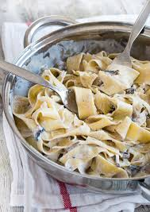

Back To Recipes
-Creamy Fettucine Alfredo-
Fettucine Alfredo is a pasta dish made from fettucine pasta tossed with Parmesan cheese and butter. As the cheese melts, it emulsifies the liquids to form a smooth and rich coating on the pasta.

Ingredients Needed:
- 8 ounces dry fettuccine pasta
- 1 (8 ounce) package cream cheese
- ¾ cup grated Parmesan cheese
- ½ cup margarine
- ½ cup milk
- 1 teaspoon garlic powder
- ¼ teaspoon dried basil
- 1 pinch ground nutmeg
Steps For Cooking:
- Bring a large pot of lightly salted water to a boil. Add pasta and cook for 8 to 10 minutes or until al dente; drain.
- In a medium saucepan, combine cream cheese, Parmesan, margarine, milk, garlic powder and basil.
- Stir over low heat for 10 to 15 minutes or until smooth and creamy.
- Toss sauce with pasta and sprinkle with nutmeg.
- Dish and enjoy the meal.
Nutritional Value:
Per Serving:
- 680 calories
- protein 18.8g
- carbohydrates 45.2g
- fat 48.2g
- cholesterol 77.2mg
- sodium 673.6mg